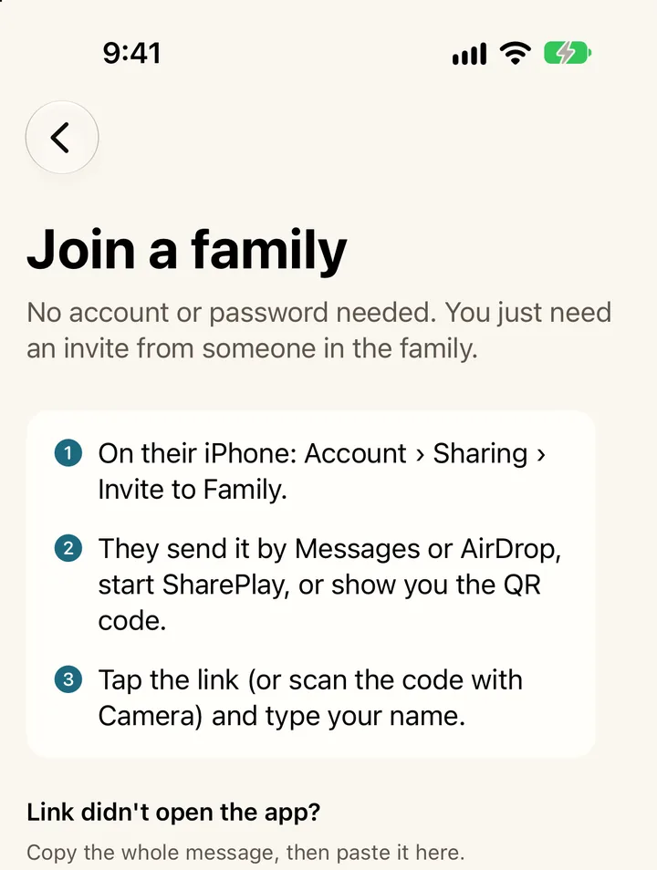

Opening invite… Someone invited you to a family Invite expired Link incomplete
You’ll join as a parent. The invite works once and expires .
No Benito yet? Get it, then come back and tap Open, or copy the invite and paste it in the app.
Ask them to send a new one from Benito’s Sharing screen.
Open the whole link from the message you got, or ask for a new invite.
